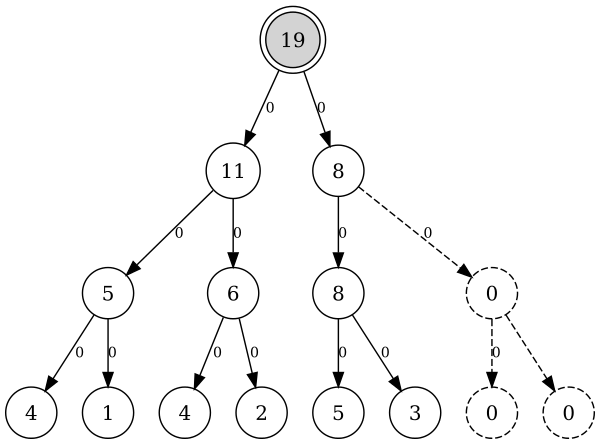
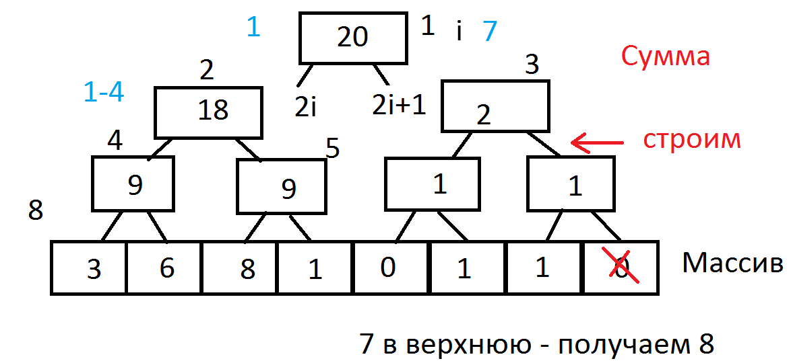

Дерево отрезков (интервалов)
Введение
В данном конспекте рассказывается о такой структуре данных как дерево отрезков (segment tree). Дерево отрезков часто применяется в геометрических и многих других алгоритмах. Оно позволяет для любой аддитивной по отрезкам функции(минимум, максимум, сумма и т.д.) вычислять ее на произвольном отрезке с конечным числом точек за $O(\log N)$, где $N$ - общее число точек в структуре.
Постановка задачи и простейшие методы решения
Постановка задачи
Предположим, что дана следующая задача: дан массив $a$ из $N$ чисел. Требуется обрабатывать следующие запросы:
- $set(i, x)$ - установить значение $i$-го элемента, равное $x$.
- $get(l, r)$ - вычислить сумму с $l$-го элемента по $r$-й, $l \le r$.
Простейшие методы решения
Рассмотрим, как можно решать эту задачу, не используя различные структуры данных.- Наиболее простым в идее и реализации является линейный подсчет суммы чисел в массиве при запросе $get$ за время $O(N)$ и изменение за $O(1)$.
- Также можно предподсчитать суммы для всех возможных отрезков в матрицу $sum$ и запрос $get$ обрабатывать за $O(1)$, непосредственно обращаясь к нужному элементу матрицы. Однако при изменении числа изменяется сумма на порядка $N^2$ отрезках. Соответственно, для корректной работы необходимо их все обновить, что требует $O(N^2)$ времени.
- Значительно более полезным на практике является метод "частичных сумм". Заключается он в следующем: для каждой позиции $i$, $1 \le i \le N$, вычисляется $s(i)$ - сумма элементов от $1$ до $i$-го включительно. Тогда запрос $get$ можно по-прежнему обрабатывать за $O(1)$: $get(l, r) = s(r) - s(l - 1)$, при этом $s(0)$ считается равной $0$. Однако запрос изменения числа по-прежнему обрабатывается долго: каждое число может участвовать в $O(N)$ частичных суммах, поэтому запрос изменения числа требует $O(N)$ времени на выполнение.
Дерево отрезков
Описание структуры
Основная идея дерева отрезков такова: предположим, что длина массива является степенью двойки (при необходимости дополним массив нулями). Для каждой степени двойки $K$, не превышащюей $N$ разобьем весь массив на последовательные отрезки длины $K$ и для каждого предподсчитаем сумму чисел на нем.
Запрос $get(l, r)$ тогда можно обрабатывать следующим образом: разбить отрезок с $l$ по $r$ на $O(\log(r - l))$ непересекающихся отрезков, длины которых являются степенями двойки и сумма значений на которых уже посчитана и в силу аддитивности суммы по отрезку сложить.
Запрос $set(i, x)$ нужно будет обрабатывать следующим образом: необходимо увеличить значение всех $\log(N)$ отрезков, в которых лежит $i$-й элемент, на $x - v$, где $v$ - текущее значение $i$-го элемента.
Обработка запросов, хранение и построение дерева отрезков
ХранениеРассмотрим, как можно хранить дерево отрезков. Сначала рассмотрим, каким образом можно хранить дерево отрезков в виде подвешенного бинарного дерева: каждому отрезку из описанных ранее разбиений сопоставим отдельную вершину дерева. Вершина $u$ будет являться родителем вершины $v$ тогда и только тогда, когда отрезок, соответствующий $u$ - наименьший из всех отрезков, которые покрывают отрезок, соответствующий $v$. Тогда корню дерева будет соответствовать отрезок, покрывающий весь массив, а листьям дерева будут соответствовать отрезки, покрывающие отдельные элементы массива. При этом т.к. длины всех отрезков - степени двойки, то у каждой вершины будет ровно два сына (если эта вершина не является листом).
Теперь покажем, как можно хранить дерево отрезков в массиве. В описанном выше бинарном подвешенном дереве для каждой вершины вычислим расстояние от нее до корня и назовем уровнем вершины. Для каждой вершины левым сыном будем считать того из сыновей, которому соответствует отрезок массива, расположенный левее. Пронумеруем вершины следующим образом: корень будет иметь номер $1$, его левый сын - номер $2$, правый сын - номер $3$ и т.д.: слева направо номеровать вершины по мере увеличения уровня. Теперь значение вершины с номером $i$ будем хранить в $i$-м элементе массива. Заметим тогда, что значение, соотвествующее левому сыну вершины с номером $i$, будет находиться в $2i$-м элементе массива, правому сыну - в $2i + 1$-м, предку - в $i / 2$-м.
Всего для хранения дерева отрезков потребуется $O(N)$ памяти: в описанном выше дереве будет одна вершина с расстоянием $0$ до корня, две - с расстоянием $1$, $2^k$ - с расстоянием $k$ до корня. Т.к. высота дерева отрезков - $\log N$, то $k \le \log(N)$ и $1 + 2 + 4 + .. + 2^{\log(N)} = 2 * 2^{\log(N)} - 1 = 2 * N - 1$.
Обработка запросовРассмотрим обработку запросов более подробно. Начнем с запроса $set(i, x)$. Заметим, что если для некторой вершины $v$ известно, что значения ее сыновей являются истинными, то в силу аддитивности суммы по отрезку истинное значение в $v$ можно вычислить как их сумму за $O(1)$. Тогда покажем, как реализовать запрос $set(i,x)$. Рассмотрим наименьший отрезок, в котором находится $i$-й элемент. Этот отрезок будет являться листом дерева отрезков и ему будет соответствовать отрезок только из $i$-го элемента. Новым значением суммы на этом отрезке будет $x$. Теперь перейдем к предку $i/2$ текущей вершины. Значение в одном из его сыновей не менялось и, соответственно, является верным, значение в другом сыне было пересчитано на предыдущем шаге и тоже является истинным. Тогда можно пересчитать значение в $i/2$ и перейти к ее предку. Действуя так, пока предок существует ($v \ne 0$, $v$ - номер текущей вершины), мы обновим все дерево. Т.к. каждый раз при переходе к предку расстояние до корня уменьшается на единицу (а номер вершины делится на 2), то таких переходов будет $O(\log N)$.
Рассмотрим теперь запрос $get(l,r)$. Для его реализации (и всего дерева отрезков) существует два различных метода: "сверху" и "снизу". Описанная выше реализация $set$ является реализацией "снизу", хотя может применяться и в методе "сверху".
При реализации запроса $get$ "снизу" поддерживаетя следующий инвариант: на $i$-м шаге $l$ и $r$ указывают на крайние левую и правую вершины, находящиеся на уровне $\log {N} - i$, которым соответствуют отрезки, покрытые еще не обработанной частью исходного запроса. Переход на уровень выше производится следующим образом: заметим, что если вершина $l$ является левым сыном, то ее предок является самой левой вершиной свего уровня, отрезок которой еще полностью не обработан, поэтому перейти на уровень выше можно непосредственно в вершину $l / 2$. Если же $l$ - правый сын, то ее отрезок ее предка уже частично обработан либо не лежит в запросе, поэтому переходить в него нельзя, но требуется обновить ответ, прибавив к нему значение в $l$ и перейти в вершину $l + 1$, которая является левым сыном своего предка. Аналогично для вершины $r$ - если $r$ правый сын, то можно перейти в его предка, иначе - добавить в ответ значение в вершине $r$, перейти в $r - 1$, которая является правым сыном своего предка, и перейти в предка $r - 1$. Действовать так нужно, пока обрабатываемый отрезок не пуст, т.е. $l \le r$. При этом т.к. каждый раз происходит переход на уровень вверх, а уровней всего $\log N$, то запрос будет обрабатываться за $O(\log N)$.
При реализации запроса $get(l,r)$ сверху необходимо хранить в вершине дополнительную информацию - границы отрезка, которы соответствует этой вершине. Обработка запроса в этом случае происходит следующим рекурсивным методом: если $v$ - текущая вершина, $v_l$ и $v_r$ - границы отрезка, который ей соответствует, то тогда:
- Если $l \le v_l$ и $v_r \le r$, то к ответу нужно добавить значение в $v$.
- Если $v_r \le l$ или $r \le v_l$, то отрезок вершины $v$ не лежит в запросе и обрабатывать $v$ не нужно.
- Если ни одно из перечисленного не верно, то результатом запроса для вершины $v$ является сумма запросов сыновей $v$ - $2v$ и $2v + 1$.
Заметим, что при таком методе на каждом уровне может быть посещено не более четырех вершин, что также дает оценку $O(\log N)$ на время работы. Аналогично можно обрабатывать запрос $set$.
Построение
Наконец, покажем, как построить над массивом дерево отрезков. За $O(N \log N$ это можно сделать следующим образом: построить дерево отрезков на массиве из нулей (тогда в каждой вершине будет храниться 0) и для каждого элемент массива произвести $set(i, a[i])$, где $a[i]$ - исходный массив.
Однако построить дерево отрезков можно быстрее - за $O(N)$, используя один линейный проход по нему. Сначала заполним самый нижний уровень. В нем хранятся суммы на отрезках с $i$ по $i$, т.е. элементы исходного массива. Заметим, что если $k$-й уровень заполнен, то можно заполнить $k - 1$, для каждого его элемента посчитав значение в нем как сумму значений в сыновьях. Таким образом, если сначала заполнить нижний уровень элементами массива, а затем пройти по всем уровням снизу вверх, действуя указанным методом, то значения всех вершин дерева отрезков будут посчитаны корректно за линейное время.
Реализация
Пример реализации дерева отрезков на Java
Пример реализации дерева отрезков на сумме без групповых операций. В конструкторе $SegTree$ параметр $numberOfValues$ - количество элементов в массиве, над которым строится дерево отрезков. Элементы массива читаются из входного потока методом $nextLong$. В массиве $tree$ хранится само дерево отрезков, $size$ - количество листьев в дереве отрезков, $inf$ - нейтральный элемент, для сложения равный нулю.
Реализация снизу:
public class SegTree {
private long[] tree;
private int size;
private final long inf = 0;
private void update(int vertex) {
this.tree[vertex] = calc(this.tree[vertex * 2],
this.tree[vertex * 2 + 1]);
}
private long calc(long a, long b) {
return a + b;
}
public SegTree(int numberOfValues) throws IOException {
this.size = 1;
while (this.size < numberOfValues) {
this.size *= 2;
}
this.tree = new long[this.size * 2];
Arrays.fill(tree, inf);
for (int i = 0; i < numberOfValues; i++)
tree[i + size] = nextLong();
for (int i = size - 1; i > 0; i--)
update(i);
}
public void set(int pos, long newValue) {
pos += size;
this.tree[pos] = newValue;
while (pos > 1) {
pos /= 2;
update(pos);
}
}
public long get(int left, int right) {
left += this.size;
right += this.size;
long answer = this.inf;
while (left <= right) {
if (left % 2 == 1) {
answer = calc(answer, this.tree[left]);
left++;
}
if (right % 2 == 0) {
answer = calc(answer, this.tree[right]);
right--;
}
left /= 2;
right /= 2;
}
return answer;
}
}
Реализация на Python
# Дерево отрезков снизу (итеративное): set и get за O(log N), построение за O(N)
def pull(tree, vertex):
"""Сумма вершины равна сумме ее двух сыновей."""
tree[vertex] = tree[2 * vertex] + tree[2 * vertex + 1]
def build(values):
"""Строит дерево за O(N): листья заполняем числами, затем пересчитываем вершины снизу вверх."""
size = 1
while size < len(values):
size *= 2
tree = [0] * (2 * size)
tree[size:size + len(values)] = values
for vertex in range(size - 1, 0, -1):
pull(tree, vertex)
return tree, size
def set_value(tree, size, pos, value):
"""Устанавливает элемент pos (с нуля) равным value и пересчитывает всех его предков."""
vertex = pos + size
tree[vertex] = value
while vertex > 1:
vertex //= 2
pull(tree, vertex)
def get_sum(tree, size, left, right):
"""Сумма элементов на отрезке [left, right] (с нуля, включительно)."""
left += size
right += size
answer = 0
while left <= right:
if left % 2 == 1:
answer += tree[left]
left += 1
if right % 2 == 0:
answer += tree[right]
right -= 1
left //= 2
right //= 2
return answer
if __name__ == "__main__":
tree, size = build([5, 3, 8, 6, 1, 4, 7, 2])
print(get_sum(tree, size, 2, 5)) # 8 + 6 + 1 + 4 = 19
set_value(tree, size, 3, 10)
print(get_sum(tree, size, 2, 5)) # 8 + 10 + 1 + 4 = 23
print(get_sum(tree, size, 0, 7)) # 5 + 3 + 8 + 10 + 1 + 4 + 7 + 2 = 40
Реализация на Rust
// Дерево отрезков снизу (итеративное): set и get за O(log N), построение за O(N)
// Листья лежат в tree[size..2*size], вершина v имеет сыновей 2v и 2v+1.
pub struct SegTree {
tree: Vec<i64>,
size: usize, // степень двойки, не меньше числа элементов
}
impl SegTree {
// Строит дерево за O(N): сначала листья, потом вершины снизу вверх
pub fn new(values: &[i64]) -> Self {
let size = values.len().next_power_of_two();
let mut seg = SegTree { tree: vec![0; 2 * size], size };
seg.tree[size..size + values.len()].copy_from_slice(values);
for vertex in (1..size).rev() {
seg.pull(vertex);
}
seg
}
// Сумма вершины равна сумме ее двух сыновей
fn pull(&mut self, vertex: usize) {
self.tree[vertex] = self.tree[2 * vertex] + self.tree[2 * vertex + 1];
}
// Устанавливает элемент pos (с нуля) равным value и пересчитывает предков: O(log N)
pub fn set(&mut self, pos: usize, value: i64) {
let mut vertex = pos + self.size;
self.tree[vertex] = value;
while vertex > 1 {
vertex /= 2;
self.pull(vertex);
}
}
// Сумма на отрезке [left, right] включительно: O(log N)
pub fn get(&self, left: usize, right: usize) -> i64 {
let (mut left, mut right) = (left + self.size, right + self.size);
let mut answer = 0;
while left <= right {
if left % 2 == 1 {
answer += self.tree[left];
left += 1;
}
if right % 2 == 0 {
answer += self.tree[right];
right -= 1;
}
left /= 2;
right /= 2;
}
answer
}
}
fn main() {
let mut seg = SegTree::new(&[5, 3, 8, 6, 1, 4, 7, 2]);
println!("{}", seg.get(2, 5)); // 8 + 6 + 1 + 4 = 19
seg.set(3, 10);
println!("{}", seg.get(2, 5)); // 8 + 10 + 1 + 4 = 23
println!("{}", seg.get(0, 7)); // 5 + 3 + 8 + 10 + 1 + 4 + 7 + 2 = 40
}Реализация на C++
// Дерево отрезков снизу (итеративное): set и get за O(log N), построение за O(N)
// Листья лежат в tree[size..2*size-1], вершина v имеет сыновей 2v и 2v+1.
#include <cstddef>
#include <iostream>
#include <vector>
struct SegTree {
std::size_t size = 1; // степень двойки, не меньше числа элементов
std::vector<long long> tree;
// Строит дерево за O(N): сначала листья, потом вершины снизу вверх
explicit SegTree(const std::vector<long long>& values) {
while (size < values.size()) size *= 2;
tree.assign(2 * size, 0);
for (std::size_t i = 0; i < values.size(); ++i) tree[size + i] = values[i];
for (std::size_t vertex = size - 1; vertex >= 1; --vertex) pull(vertex);
}
// Сумма вершины равна сумме ее двух сыновей
void pull(std::size_t vertex) { tree[vertex] = tree[2 * vertex] + tree[2 * vertex + 1]; }
// Устанавливает элемент pos (с нуля) равным value и пересчитывает предков: O(log N)
void set(std::size_t pos, long long value) {
std::size_t vertex = pos + size;
tree[vertex] = value;
while (vertex > 1) {
vertex /= 2;
pull(vertex);
}
}
// Сумма на отрезке [left, right] включительно: O(log N)
long long get(std::size_t left, std::size_t right) const {
left += size;
right += size;
long long answer = 0;
while (left <= right) {
if (left % 2 == 1) {
answer += tree[left];
++left;
}
if (right % 2 == 0) {
answer += tree[right];
--right;
}
left /= 2;
right /= 2;
}
return answer;
}
};
int main() {
SegTree seg({5, 3, 8, 6, 1, 4, 7, 2});
std::cout << seg.get(2, 5) << '\n'; // 8 + 6 + 1 + 4 = 19
seg.set(3, 10);
std::cout << seg.get(2, 5) << '\n'; // 8 + 10 + 1 + 4 = 23
std::cout << seg.get(0, 7) << '\n'; // 5 + 3 + 8 + 10 + 1 + 4 + 7 + 2 = 40
return 0;
}
Реализация сверху:
public class SegTree {
private Vertex[] tree;
private int size;
private final long inf = 0;
private class Vertex {
private long left;
private long right;
private long value;
public Vertex(long left, long right, long value) {
this.left = left;
this.right = right;
this.value = value;
}
}
public SegTree(int numberOfElements) throws IOException {
size = 1;
while (size < numberOfElements)
size *= 2;
tree = new Vertex[size * 2];
for (int i = 0; i < numberOfElements; i++) {
tree[i + size] = new Vertex(i, i, nextLong());
}
for (int i = numberOfElements; i < size; i++)
tree[i + size] = new Vertex(i, i, inf);
for (int i = size - 1; i > 0; i--) {
tree[i] = new Vertex(tree[i * 2].left, tree[i * 2 + 1].right,
tree[i * 2].value + tree[i * 2 + 1].value);
}
}
public long get(int vertex, int left, int right) {
if (tree[vertex].left > right || tree[vertex].right < left)
return inf;
if (tree[vertex].left >= left && tree[vertex].right <= right)
return tree[vertex].value;
long answer = get(vertex * 2, left, right)
+ get(vertex * 2 + 1, left, right);
return answer;
}
public void set(int vertex, int left, int right, long value) {
if (tree[vertex].left > right || tree[vertex].right < left)
return;
if (tree[vertex].left >= left && tree[vertex].right <= right) {
tree[vertex].value = value;
return;
}
set(vertex * 2, left, right, value);
set(vertex * 2 + 1, left, right, value);
tree[vertex].value = tree[vertex * 2].value
+ tree[vertex * 2 + 1].value;
}
}
Реализация на Python
# Дерево отрезков сверху (рекурсивное): set и get за O(log N), построение за O(N)
# Требует n >= 1: корень отвечает за отрезок (0, n - 1). Вершина vertex отвечает за отрезок node = (lo, hi),
# ее сыновья - за левую и правую половины.
def pull(tree, vertex):
"""Сумма вершины равна сумме ее двух сыновей."""
tree[vertex] = tree[2 * vertex] + tree[2 * vertex + 1]
def build(tree, vertex, node, values):
"""Строит поддерево вершины vertex за время, пропорциональное длине отрезка."""
lo, hi = node
if lo == hi:
tree[vertex] = values[lo]
return
mid = (lo + hi) // 2
build(tree, 2 * vertex, (lo, mid), values)
build(tree, 2 * vertex + 1, (mid + 1, hi), values)
pull(tree, vertex)
def set_value(tree, vertex, node, pos, value):
"""Устанавливает элемент pos равным value, спускаясь от корня к листу."""
lo, hi = node
if lo == hi:
tree[vertex] = value
return
mid = (lo + hi) // 2
if pos <= mid:
set_value(tree, 2 * vertex, (lo, mid), pos, value)
else:
set_value(tree, 2 * vertex + 1, (mid + 1, hi), pos, value)
pull(tree, vertex)
def get_sum(tree, vertex, node, query):
"""Сумма на отрезке query = (left, right); вершины вне запроса пропускаются."""
lo, hi = node
left, right = query
if right < lo or hi < left:
return 0
if left <= lo and hi <= right:
return tree[vertex]
mid = (lo + hi) // 2
return (get_sum(tree, 2 * vertex, (lo, mid), query)
+ get_sum(tree, 2 * vertex + 1, (mid + 1, hi), query))
if __name__ == "__main__":
values = [5, 3, 8, 6, 1, 4, 7, 2]
root = (0, len(values) - 1)
tree = [0] * (4 * len(values))
build(tree, 1, root, values)
print(get_sum(tree, 1, root, (2, 5))) # 8 + 6 + 1 + 4 = 19
set_value(tree, 1, root, 3, 10)
print(get_sum(tree, 1, root, (2, 5))) # 8 + 10 + 1 + 4 = 23
print(get_sum(tree, 1, root, (0, 7))) # 5 + 3 + 8 + 10 + 1 + 4 + 7 + 2 = 40
Реализация на Rust
// Дерево отрезков сверху (рекурсивное): set и get за O(log N), построение за O(N)
// Требует n >= 1: корень отвечает за отрезок [0, n-1]. Вершина v отвечает за отрезок [lo, hi],
// сыновья 2v и 2v+1 - за его левую и правую половины. Сумма вершины равна сумме ее двух сыновей
fn pull(tree: &mut [i64], vertex: usize) {
tree[vertex] = tree[2 * vertex] + tree[2 * vertex + 1];
}
// Строит поддерево вершины vertex за время, пропорциональное длине отрезка
pub fn build(tree: &mut [i64], vertex: usize, node: (usize, usize), values: &[i64]) {
let (lo, hi) = node;
if lo == hi {
tree[vertex] = values[lo];
return;
}
let mid = (lo + hi) / 2;
build(tree, 2 * vertex, (lo, mid), values);
build(tree, 2 * vertex + 1, (mid + 1, hi), values);
pull(tree, vertex);
}
// Устанавливает элемент pos равным value, спускаясь от корня к листу: O(log N)
pub fn set_value(tree: &mut [i64], vertex: usize, node: (usize, usize), pos: usize, value: i64) {
let (lo, hi) = node;
if lo == hi {
tree[vertex] = value;
return;
}
let mid = (lo + hi) / 2;
if pos <= mid {
set_value(tree, 2 * vertex, (lo, mid), pos, value);
} else {
set_value(tree, 2 * vertex + 1, (mid + 1, hi), pos, value);
}
pull(tree, vertex);
}
// Сумма на отрезке query = (left, right); вершины вне запроса пропускаются: O(log N)
pub fn get_sum(tree: &[i64], vertex: usize, node: (usize, usize), query: (usize, usize)) -> i64 {
let (lo, hi) = node;
let (left, right) = query;
if right < lo || hi < left {
return 0;
}
if left <= lo && hi <= right {
return tree[vertex];
}
let mid = (lo + hi) / 2;
get_sum(tree, 2 * vertex, (lo, mid), query) + get_sum(tree, 2 * vertex + 1, (mid + 1, hi), query)
}
fn main() {
let values: [i64; 8] = [5, 3, 8, 6, 1, 4, 7, 2];
let root = (0, values.len() - 1);
let mut tree = vec![0; 4 * values.len()];
build(&mut tree, 1, root, &values);
println!("{}", get_sum(&tree, 1, root, (2, 5))); // 8 + 6 + 1 + 4 = 19
set_value(&mut tree, 1, root, 3, 10);
println!("{}", get_sum(&tree, 1, root, (2, 5))); // 8 + 10 + 1 + 4 = 23
println!("{}", get_sum(&tree, 1, root, (0, 7))); // 40
}Реализация на C++
// Дерево отрезков сверху (рекурсивное): set и get за O(log N), построение за O(N)
// Требует n >= 1: корень отвечает за отрезок [0, n-1]. Вершина v отвечает за отрезок [lo, hi],
// сыновья 2v и 2v+1 - за его левую и правую половины.
#include <cstddef>
#include <iostream>
#include <utility>
#include <vector>
using Node = std::pair<std::size_t, std::size_t>; // отрезок [lo, hi] вершины
// Сумма вершины равна сумме ее двух сыновей
void pull(std::vector<long long>& tree, std::size_t vertex) {
tree[vertex] = tree[2 * vertex] + tree[2 * vertex + 1];
}
// Строит поддерево вершины vertex за время, пропорциональное длине отрезка
void build(std::vector<long long>& tree, std::size_t vertex, Node node, const std::vector<long long>& values) {
auto [lo, hi] = node;
if (lo == hi) { tree[vertex] = values[lo]; return; }
std::size_t mid = (lo + hi) / 2;
build(tree, 2 * vertex, {lo, mid}, values);
build(tree, 2 * vertex + 1, {mid + 1, hi}, values);
pull(tree, vertex);
}
// Устанавливает элемент pos равным value, спускаясь от корня к листу: O(log N)
void set_value(std::vector<long long>& tree, std::size_t vertex, Node node, std::size_t pos, long long value) {
auto [lo, hi] = node;
if (lo == hi) { tree[vertex] = value; return; }
std::size_t mid = (lo + hi) / 2;
if (pos <= mid) {
set_value(tree, 2 * vertex, {lo, mid}, pos, value);
} else {
set_value(tree, 2 * vertex + 1, {mid + 1, hi}, pos, value);
}
pull(tree, vertex);
}
// Сумма на отрезке query = [left, right]; вершины вне запроса пропускаются: O(log N)
long long get_sum(const std::vector<long long>& tree, std::size_t vertex, Node node, Node query) {
auto [lo, hi] = node;
auto [left, right] = query;
if (right < lo || hi < left) return 0;
if (left <= lo && hi <= right) return tree[vertex];
std::size_t mid = (lo + hi) / 2;
return get_sum(tree, 2 * vertex, {lo, mid}, query) + get_sum(tree, 2 * vertex + 1, {mid + 1, hi}, query);
}
int main() {
std::vector<long long> values = {5, 3, 8, 6, 1, 4, 7, 2};
Node root{0, values.size() - 1};
std::vector<long long> tree(4 * values.size(), 0);
build(tree, 1, root, values);
std::cout << get_sum(tree, 1, root, {2, 5}) << '\n'; // 8 + 6 + 1 + 4 = 19
set_value(tree, 1, root, 3, 10);
std::cout << get_sum(tree, 1, root, {2, 5}) << '\n'; // 8 + 10 + 1 + 4 = 23
std::cout << get_sum(tree, 1, root, {0, 7}) << '\n'; // 40
return 0;
}


Реализация на Delphi - Числа на отрезке
Вова нарисовал на доске горизонтальную прямую, отметил на ней $N$ точек и пронумеровал их слева направо натуральными числами от $1$ до $N$. После этого он стал обводить некоторые точки кружочками. Время от времени Паша, чтобы оторвать его от этого занятия, спрашивает его, сколько точек на отрезке от $A$ до $B$, включительно, Вова уже обвёл кружочками. Ответьте Паше на все его вопросы, чтобы не отвлекать Вову.
В первой строке входного файла записаны два целых числа $N$ и $K$ "--- количество точек на отрезке и количество событий, соответственно ($1 \le N \le 1\,000\,000$, $1 \le K \le 100\,000$).
В следующих $K$ строках заданы события в порядке, в котором они случались. Каждая из этих строк либо содержит целое число $C$ от $1$ до $N$, включительно, которое означает, что Вова обвёл кружочком точку с номером $C$, либо имеет вид $0$ $A$ $B$, где $1 \le A \le B \le N$, что означает, что Паша спросил, сколько точек на отрезке от $A$ до $B$, включительно, уже обведено кружочками.
Вова обводит каждую точку не более одного раза.
{$APPTYPE CONSOLE}
uses SysUtils;
const base = 1 shl 20;
var
S, B, E: array [1 .. 2 * base] of Integer; { S-Sum, B-Begin, E-End }
N: Integer;
{ Количество точек на отрезке от A до B }
function Sum(x, y, i: Integer): Integer;
begin
if (y < B[i]) or (x > E[i]) then begin
Sum := 0;
exit;
end;
if (x <= B[i]) and (y >= E[i]) then begin
Sum := S[i];
exit;
end;
Sum := Sum(x,y,i*2) + Sum(x,y,i*2+1);
end;
{ Добавление точки }
procedure Put(p: Integer);
begin
p := base + p - 1;
while p > 0 do
begin
inc(S[p]);
p := p div 2; { Поднимаемся к отрезку-предку }
end;
end;
{ Вычисляем начала и концы отрезков в дереве отрезков }
procedure fillBE;
var i: Integer;
begin
{ Нижний слой }
for i := base to 2 * base do
begin
B[i] := i - base + 1;
E[i] := B[i];
end;
{ Поднимаемся выше }
for i := base - 1 downto 1 do
begin
B[i] := B[i * 2];
E[i] := E[i * 2 + 1];
end;
end;
var
K: Integer;
i, p, x, y: Integer;
begin
Assign(Input, 'numbers.in');
Reset(Input);
Assign(Output, 'numbers.out');
Rewrite(Output);
Read(N, K);
fillBE;
for i := 1 to K do
begin
Read(p);
if p = 0 then
begin
Read(x, y);
Writeln(Sum(x, y, 1));
end
else
Put(p);
end;
end.
Без предпросчёта начал/концов отрезков.
{$APPTYPE CONSOLE}
uses SysUtils;
const base = 1 shl 20;
var
S: array [1 .. 2 * base] of Integer; { S-Sum, B-Begin, E-End }
N: Integer; { Количество точек }
function B( i:integer ):Integer;
begin
if i>=base then
B := i-base+1
else
B := B(i*2);
end;
function E( i:integer ):Integer;
begin
if i>=base then
E := i-base+1
else
E := E(i*2+1);
end;
{ Количество точек на отрезке от A до B }
function Sum(x, y, i: Integer): Integer;
begin
if (yE(i)) then begin
Sum := 0;
exit;
end;
if (x<=B(i)) and (y>=E(i)) then begin
Sum := S[i];
exit;
end;
Sum := Sum(x,y,i*2) + Sum(x,y,i*2+1);
end;
{ Добавление точки }
procedure Put(p: Integer);
begin
p := base + p - 1; { Индекс элемента на нижнем уровне дерева }
while p > 0 do
begin
inc(S[p]);
p := p div 2; { Поднимаемся к отрезку-предку }
end;
end;
var
K: Integer;
i, p, x, y: Integer;
begin
Assign(Input, 'numbers.in'); Reset(Input);
Assign(Output, 'numbers.out'); Rewrite(Output);
Read(N, K);
for i := 1 to K do
begin
Read(p);
if p = 0 then begin
Read(x, y); { Начало и конец интервала }
Writeln(Sum(x, y, 1));
end
else { Обводим точку }
Put(p);
end;
end.